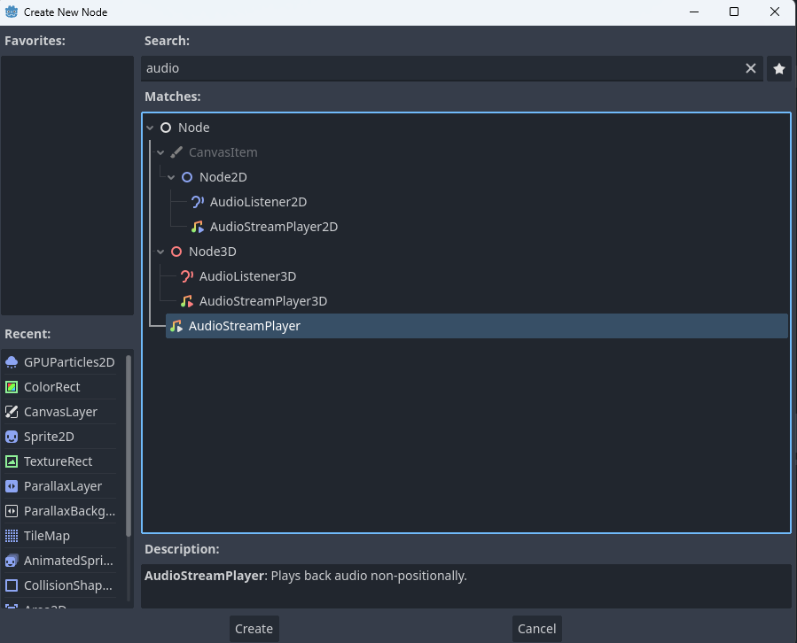
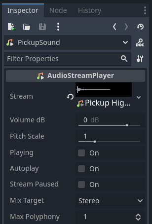
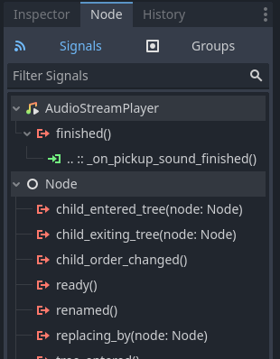
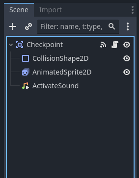
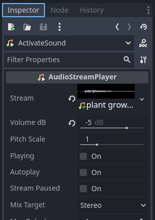

Continuing with sounds, at the moment our pickups and checkpoints are completely silent and lifeless! If you have completed the previous two sound-based modules, I would challenge you to try and add sound effects to the pickups and checkpoints without going through this module, but if you haven't, or you run into any issues here's how to do it:
This section requires the Collectables module. First things first, navigate to your pickup scene. Right click the Pickup node and create a new AudioStreamPlayer node as a child. Rename it to PickupSound.
Next we need to import our enemy hurt sound(s) from the Gameplay Sounds folder in your VGDC-2024 Assets folder.
If you are not taking this course in person, you can download the assets Here
Next go to the specific pickup scene you want to add your sound to (in this case I am using the jade pickup scene.) Select the PickupSound node, then in the inspector drop your imported sound into the stream property like so:
In order to have the sound play when the player picks up the pickup we need to go into the pickup script. Within the onPickup function we need to add the following line of code:
func onPickup(_area):
$PickupSound.play()
queue_free()However, if you test the game out now you may notice a problem: the sound gets cut off immediately! This is because we are deleting the pickup the moment the player touches it, which also deletes the audio player. To fix this we need to remove the queue_free() from the onPickup function, then create a new function called disable_pickup with the following code:
func disable_pickup():
$CollisionShape2D.disabled = true
$AnimatedSprite2D.visible = falseThis function deactivates the pickup's collision and visuals, effectively removing it for the player. In order to use this function lets add a call_deferred method in the onPickup function.
func onPickup(_area):
$PickupSound.play()
call_deferred("disable_pickup")Note that the call_deferred method simply waits to call a method until after the current physics frame is complete. We do this as deactivating collision within a physics frame can break things pretty quickly.
Now the sound should not be cut off, but we still do want to delete the pickups after the sound is done. We can do this by selecting the PickupSound node, going to the inspector under the node tab and connecting the finished signal to the pickup script.
Finally, in the new _on_pickup_sound_finished function, add back the queue_free method.
func _on_pickup_sound_finished():
queue_free()This section requires the Checkpoints module. Go ahead and repeat the same process you did for the collectables to create a new AudioStreamPlayer node (rename it to ActivateSound.)
Next import the checkpoint sound from the Gameplay Sounds folder in your VGDC-2024 Assets folder. Select the ActivateSound node and drop your imported sound into the stream property in the inspector.
Finally, navigate to the checkpoint script. In the _on_area_entered function we will add a line to play the activate sound when the checkpoint is first activated like so:
func _on_area_entered(area):
area.get_parent().respawn_point = global_position
if not active:
$AnimatedSprite2D.play("activate")
$ActivateSound.play()
active = trueAnd that is the gameplay sounds done! Go ahead and try out some of the sounds and change volumes and pitches, then move on to another module!